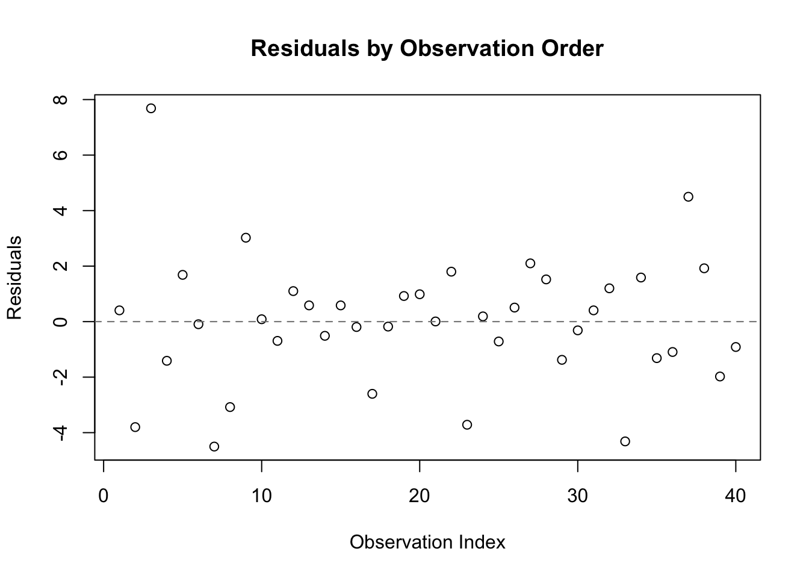
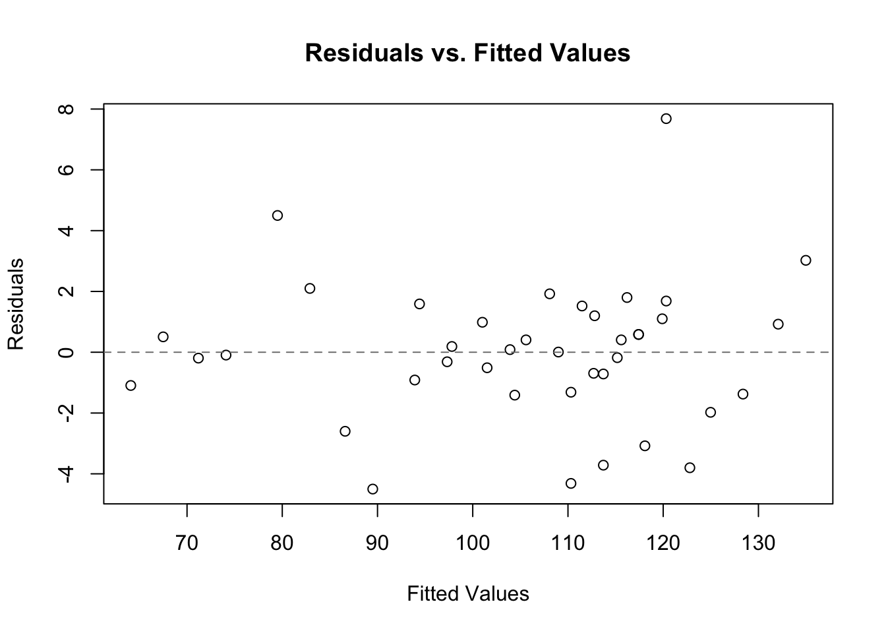
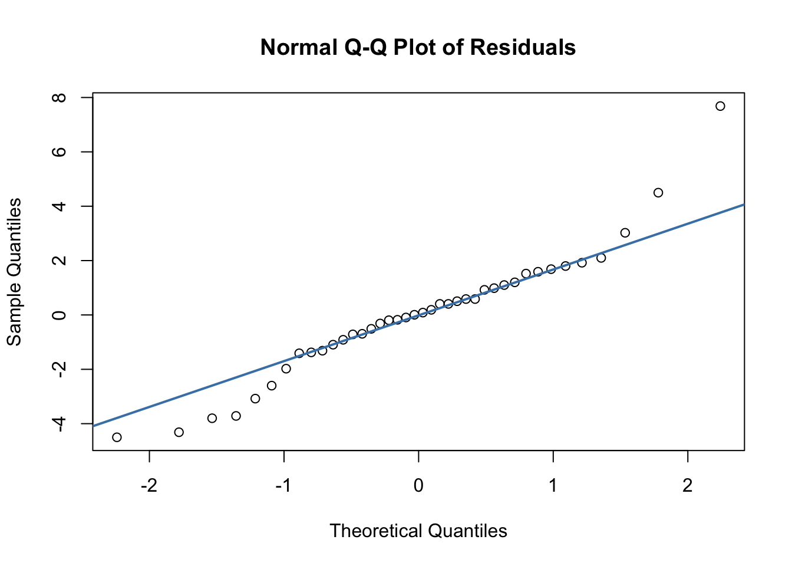

Overview
ANOVA models rest on a set of statistical assumptions. When these assumptions hold, the F test behaves as expected. When they are violated, p-values and confidence intervals may be misleading. This script walks through how to check each assumption in R and how to respond when a violation is detected.
We will work with the mind2 dataset — a mindfulness program study that tracked blood pressure (BP) in 10 participants across four time points: Before, One Month, Three Months, and Six Months.
Setup
library(readr)
library(nlme)
library(car)Loading required package: carDatamind2 <- read_csv("mind2.csv")New names:
Rows: 40 Columns: 4
── Column specification
──────────────────────────────────────────────────────── Delimiter: "," chr
(2): Person, Time dbl (2): ...1, BP
ℹ Use `spec()` to retrieve the full column specification for this data. ℹ
Specify the column types or set `show_col_types = FALSE` to quiet this message.
• `` -> `...1`mind2$Person <- as.factor(mind2$Person)
mind2$Time <- as.factor(mind2$Time)The Assumptions
Three assumptions apply to all ANOVA designs (one-way, two-way between-subjects, and repeated-measures):
- Independence of observations — scores from different people must not influence one another
- Homogeneity of variance (homoscedasticity) — the variance of the residuals should be roughly equal across groups or conditions
- Normality — the residuals (or population scores) should be approximately normally distributed
Repeated-measures ANOVA adds a fourth:
- Sphericity — the variances of the difference scores between all pairs of conditions must be equal
We test these using residuals from the fitted model. We start by fitting the model using lme() from the nlme package, which makes it easy to extract residuals from a repeated-measures design.
fit_lme <- lme(BP ~ Time, random = ~1|Person, data = mind2)
anova(fit_lme) numDF denDF F-value p-value
(Intercept) 1 27 344.6427 <.0001
Time 3 27 24.4851 <.0001The model confirms what Script 6 showed: there is a significant effect of time, F(3, 27) = 24.49, p < .001. Now we check whether the assumptions of this model are satisfied.
Assumption 1: Independence
model.res <- residuals(fit_lme)
model.fitted <- fitted(fit_lme)
plot(model.res,
ylab = "Residuals",
xlab = "Observation Index",
main = "Residuals by Observation Order")
abline(h = 0, lty = 2, col = "gray50")
In a repeated-measures design, the residuals will not look completely random. Because the same person contributes multiple observations, there is built-in correlation — and that is expected. If the residuals looked perfectly independent and scattered, it would actually suggest the within-subject correlation is not being captured by the model. What you are looking for is the absence of systematic drift or clustering across the plot.
Assumption 2: Homogeneity of Variance (Homoscedasticity)
A residuals vs. fitted values plot is the standard diagnostic for homoscedasticity. If the assumption holds, the spread of residuals should be roughly consistent across the range of fitted values — a horizontal band with no fanning or narrowing.
plot(model.fitted, model.res,
xlab = "Fitted Values",
ylab = "Residuals",
main = "Residuals vs. Fitted Values")
abline(h = 0, lty = 2, col = "gray50")
In this plot, the spread of the residuals appears to change across fitted values, which suggests unequal variance. This is not unusual in repeated-measures data, but it should be addressed.
Formal Test: Likelihood Ratio Test
We can formally test whether allowing condition-specific residual variances improves the model fit. We fit a second model that explicitly allows each time point to have its own residual variance, then compare the two models using a likelihood ratio test.
fit_lme_unequal <- lme(
BP ~ Time,
random = ~1|Person,
data = mind2,
weights = varIdent(form = ~1|Time)
)
anova(fit_lme, fit_lme_unequal) Model df AIC BIC logLik Test L.Ratio p-value
fit_lme 1 6 243.1303 252.6315 -115.5652
fit_lme_unequal 2 9 229.7751 244.0268 -105.8876 1 vs 2 19.35524 2e-04The likelihood ratio test shows a significant improvement when allowing unequal variances across time points, χ²(3) = 19.36, p < .001. The model with unequal variances also has lower AIC (229.78 vs. 243.13) and lower BIC (244.03 vs. 252.63).
Lower AIC and BIC indicate a better-fitting model. Both criteria favor the heterogeneous-variance model here, confirming that the equal-variance assumption is violated. For final reporting, results should be based on fit_lme_unequal rather than the original model.
Assumption 3: Normality
A Q-Q (quantile–quantile) plot compares the distribution of the residuals to what we would expect if they came from a normal distribution. Points that fall closely along the diagonal line indicate approximate normality.
qqnorm(model.res, main = "Normal Q-Q Plot of Residuals")
qqline(model.res, col = "steelblue", lwd = 2)
In this plot, several departures from normality are visible:
- Heavy tails at both ends: points deviate from the line at the extremes
- Lower tail deviation: the most pronounced departure is in the lower tail (around −2 theoretical quantiles), where points fall below the line
- S-shaped pattern: suggests possible skewness in the distribution
These patterns indicate that the residuals have heavier tails than a normal distribution and may be slightly negatively skewed. With only 10 participants, the Q-Q plot has limited resolution, and ANOVA is reasonably robust to mild normality violations when sample sizes are equal across conditions.
Assumption 4: Sphericity (Repeated-Measures Only)
Sphericity requires that the variances of the difference scores between all pairs of time points are equal. For example, the variance of (Before − OneMonth) should equal the variance of (Before − SixMonth) and the variance of (OneMonth − SixMonth), and so on.
If sphericity is violated, the F test from a standard repeated-measures ANOVA is too liberal — it rejects the null hypothesis more often than it should.
The aov() function used in Script 6 does not test sphericity or apply corrections for it. To test and correct for sphericity violations, we use the Anova() function from the car package.
Restructuring the Data
The Anova() function from car requires the data in wide format — one row per participant, one column per time point.
shortmind <- with(mind2, cbind(
BP[Time == "Before"],
BP[Time == "OneMonth"],
BP[Time == "ThreeMonth"],
BP[Time == "SixMonth"]
))
mind.model <- lm(shortmind ~ 1)
TimePoint <- factor(1:4)Running the Test
fit_sph <- Anova(mind.model,
idata = data.frame(TimePoint),
idesign = ~TimePoint,
type = "III")
summary(fit_sph, multivariate = FALSE)
Univariate Type III Repeated-Measures ANOVA Assuming Sphericity
Sum Sq num Df Error SS den Df F value Pr(>F)
(Intercept) 445421 1 11631.7 9 344.643 1.749e-08 ***
TimePoint 569 3 209.2 27 24.485 7.305e-08 ***
---
Signif. codes: 0 '***' 0.001 '**' 0.01 '*' 0.05 '.' 0.1 ' ' 1
Mauchly Tests for Sphericity
Test statistic p-value
TimePoint 0.0098901 1.4697e-06
Greenhouse-Geisser and Huynh-Feldt Corrections
for Departure from Sphericity
GG eps Pr(>F[GG])
TimePoint 0.38075 0.0004042 ***
---
Signif. codes: 0 '***' 0.001 '**' 0.01 '*' 0.05 '.' 0.1 ' ' 1
HF eps Pr(>F[HF])
TimePoint 0.3997112 0.0003089785Reading the Output
The output has three parts:
Univariate Type III Repeated-Measures ANOVA Assuming Sphericity This is the standard F test, computed under the assumption that sphericity holds. Use these values only if the Mauchly test is non-significant.
Mauchly Tests for Sphericity The null hypothesis is that sphericity holds. We want p > .05 to retain the assumption. Here, p < .001, which means sphericity is violated. We should not rely on the uncorrected F test.
Greenhouse-Geisser and Huynh-Feldt Corrections When sphericity is violated, these corrections adjust the degrees of freedom to produce a more conservative F test. Both corrections still yield p < .001, so the main effect of time remains significant even after accounting for the sphericity violation.
Which correction to report? The Greenhouse-Geisser (GG) correction is more conservative and is generally preferred when the GG epsilon (ε) is below 0.75. Here, GG ε = 0.38, so report the Greenhouse-Geisser corrected values.
Summary
| Assumption | Test / Diagnostic | Result |
|---|---|---|
| Independence | Residuals plot | No systematic pattern detected |
| Homoscedasticity | Residuals vs. fitted plot; likelihood ratio test | Violated — unequal variance across time points |
| Normality | Q-Q plot | Mild deviation (heavy tails); proceed with caution |
| Sphericity | Mauchly’s test | Violated — use GG-corrected F values |